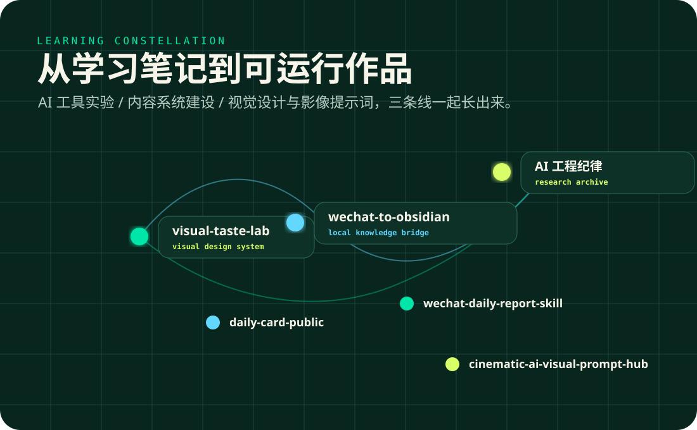

主推 / VISUAL SYSTEM
visual-taste-lab
把“让页面好看一点”拆成可执行的视觉身份审计、设计语言和页面验证流程。
BEGINNER TO BUILDER / PUBLIC LEARNING LAB
我把每天学到的 AI、自动化、内容整理和视觉设计，做成可运行、可分享、可复用的项目。这里不是大神履历，而是一条普通人能看见过程的学习路径。

NOW SHIPPING
THREE TRACKS
用 Codex、Agent、自动化脚本和工作流，把想法做成能运行的小工具。
Codex / Agent / Python / MCP把微信、Obsidian、日报和知识库连接起来，让信息每天自动沉淀。
WeChat / Obsidian / Digest / KB用 VI-first 的方法训练 AI 页面审美，让产出少一点模板味，多一点可读性。
Visual Taste / HTML / Cards / PagesPROJECT MAP
问题：AI 编程不能只追求生成速度。做法：整理复杂度、Spec、测试、Agent、Context Engineering 的工程框架。
学到：AI 放大能力，也放大工程纪律缺口。
问题：政策信息分散且难查询。做法：把全国 OPC 政策资料整理成可导航页面。
学到：资料整理到最后，应该变成工具。
问题：选题和账号监控太依赖手动浏览。做法：把多平台 KOL 监控与 AI 选题分析做成工具系统。
学到：AI 工具最值钱的地方是减少重复判断。
问题：微信里的信息很快沉没。做法：把聊天记录、文件、链接导入 Obsidian，变成本地知识库。
学到：内容系统的核心是让资料可搜索、可引用、可复用。
问题：学到的内容很难持续输出。做法：把群聊、主题和笔记压缩成每日学习卡片。
学到：稳定输出比一次性灵感更重要。
问题：微信群日报需要可读、可分享。做法：生成聊天气泡风格 HTML 和长图报告。
学到：自动化输出也需要阅读体验。
LEARNING PATH
不需要一开始就懂所有东西。先把一个小问题做成能运行的版本，下一步就会变清楚。
去 GitHub 看全部项目